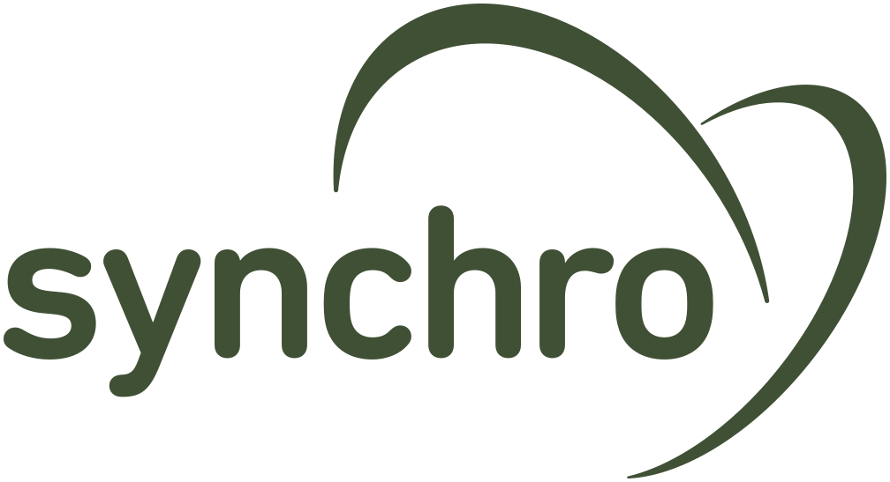
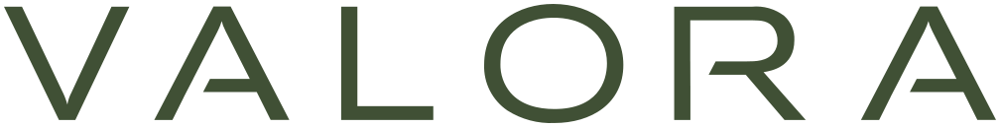
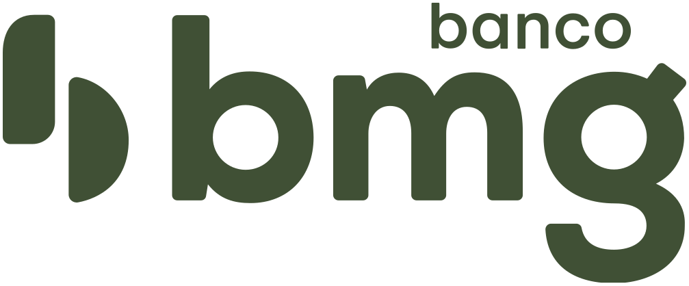
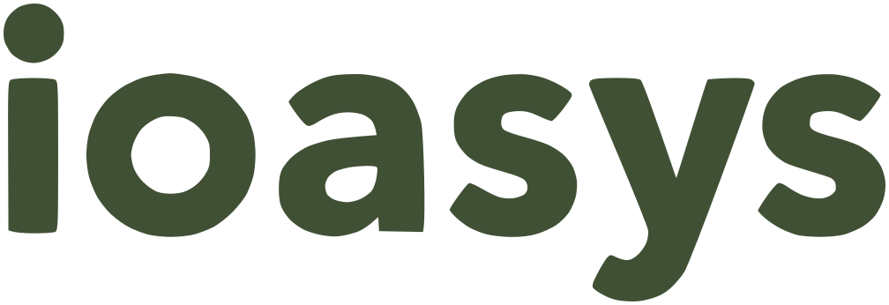
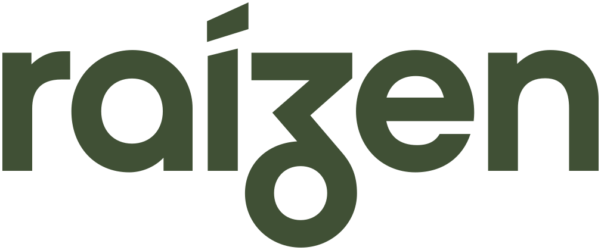
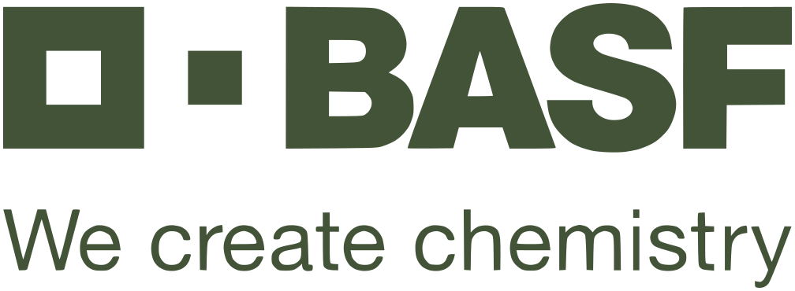
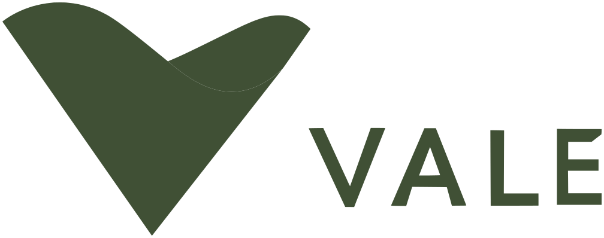
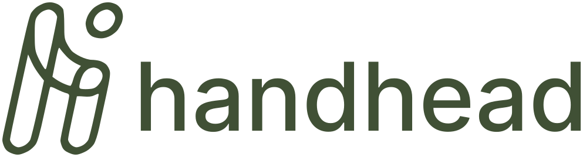

Oi! Soua Gi.
Cresci em Juazeiro do Norte, no Cariri, e desde os 14 anos desenho para entender o mundo. Foi pelas ilustrações e pelo design gráfico que aprendi a olhar para cores, formas e histórias.
Com o tempo, quis ver esses desenhos funcionando: nas mãos de pessoas, resolvendo algo de verdade. Me formei em Sistemas de Informação pela UNINASSAU e encontrei no UX/UI o lugar onde tecnologia e design se encontram.
O queeu faço
UX design
Condução de pesquisas com usuários, entrevistas e testes de usabilidade, análise de dados e definição de fluxos.
UI design
Criação de interfaces com foco em usabilidade, acessibilidade e consistência visual, aplicando boas práticas de hierarquia da informação.
Design gráfico
Criação de identidade visual, logotipos, manuais de marca, ilustração e peças gráficas digitais e impressas.
Experiência
 Julho 2026 – até o momento
Julho 2026 – até o momentoProduct Design Pleno
Product Design Pleno
Atuo como Product Designer na Synchro, alocada pela consultoria Levva, conduzindo o design end-to-end de produtos tributários, com foco no módulo de Reforma Tributária, evolução do Design System, pesquisas com usuários e modernização de sistemas legados.

 Março 2023 – Junho 2026 · 3 anos e 3 meses
Março 2023 – Junho 2026 · 3 anos e 3 mesesProduct Design Pleno
Product Design Pleno
Quatro frentes de atuação na consultoria Raro Labs:

Valora: Addere, gestão de FIDCs
Atuei como Product Designer na Valora, por meio da consultoria Raro Labs, liderando o discovery e o design de experiência do sistema Addere, voltado à gestão de FIDCs (Fundos de Investimento em Direitos Creditórios). O projeto buscou substituir processos fragmentados e dependentes de planilhas Excel, reduzindo retrabalho, aumentando a rastreabilidade das operações e trazendo mais eficiência para a gestão dos fundos por meio de uma experiência integrada e escalável.

CBDB e Comunicação da Raro
Atuei no CBDB, aprimorando a experiência do site e do dashboard de especialistas após a adequação à LGPD, e no time interno de Comunicação da Raro, apoiando a implementação da nova identidade visual por meio do desenvolvimento de materiais digitais e impressos, como apresentações, comunicados internos, camisetas, canecas e brindes.

Banco Bmg: Design System Genesis
Alocada no maior cliente da Raro Labs, o Banco Bmg. Nesse período, trabalhei no time de Design System, focada na criação, evolução e documentação de componentes, definição de padrões visuais e de interação, apoio aos times de produto e desenvolvimento, além da participação em ritos como design critique e design review, garantindo consistência, escalabilidade e acessibilidade nas interfaces.


Instituto Votorantim, Tudo no Bolso e Comunicação
Atuei em diferentes clientes, como Instituto Votorantim e Tudo no Bolso. Nesse período, desenvolvi fluxogramas e protótipos de alta fidelidade para aplicativos, criei um site de checklist para o Instituto Votorantim e também atuei na equipe de comunicação da Raro Labs, produzindo peças gráficas, incluindo materiais impressos.

Agosto 2021 – Março 2023 · 1 ano e 7 mesesProduct Design Júnior

Product Design Júnior
Trabalhei junto a squads na criação de produtos digitais, colaborando com times multidisciplinares em projetos para clientes como Raízen, BASF e Vale. Minhas atividades incluíram a criação e evolução de style guides e padronização de componentes, redesign de aplicativos, desenho de interfaces para desktop, mobile e tablet, desenvolvimento de protótipos interativos, participação ativa em discussões e apresentações de soluções, análise de dados por meio do Hotjar e estudos de pesquisas com usuários. Além disso, atuei como mentora, orientando e tirando dúvidas sobre a cultura da ioasys.



 Maio 2021 – Agosto 2021 · 3 meses
Maio 2021 – Agosto 2021 · 3 mesesUX/UI Design · Estágio
UX/UI Design · Estágio
Participei do mapeamento de demandas e requisitos dos usuários junto ao time e desenvolvi wireframes e telas em baixa e média fidelidade, contribuindo para a prototipagem, estruturação e evolução dos produtos digitais.

Novembro 2020 – Maio 2021 · 6 mesesUX/UI Design · Estágio

UX/UI Design · Estágio
Nesse período, desenvolvi peças para redes sociais e criei fluxos de aplicativos no Figma, apoiando o time na construção de soluções visuais e na estruturação da experiência do usuário.
Formação
Bacharelado em Sistemas de Informação
UNINASSAU
Técnica em Finanças
Raimundo Saraiva Coelho
Extras
Fora das telas, eu desenho. É o meu jeito de guardar o que vejo: o sol do sertão, as cores das fachadas, as imagens de fé que cresci vendo no Cariri. Carrego o Nordeste comigo em tudo o que crio, e é nas ilustrações do meu tempo livre, que compartilho no Instagram, que ele aparece sem filtro.

Sistema de vendas para maquininhas
Solução de PDV desenvolvida para rodar diretamente em maquininhas Android, centralizando pedidos e pagamentos em um único dispositivo.

App BASF Agro
O BASF Agro é o aplicativo da BASF para quem trabalha no campo, com informações técnicas sobre cultivos, pragas e produtos. Na ioasys, atuei no redesign do app.

Estruturação da Jornada do FIDC
De processos manuais e fragmentados a uma visão estruturada e escalável

Consistência em uma transição tecnológica
Genesis é o Design System do Banco Bmg, responsável por padronizar componentes, tokens e diretrizes para o App em Flutter.

© 2026 XL Borges. Todos os direitos reservados · CNPJ 67.998.140/0001-71